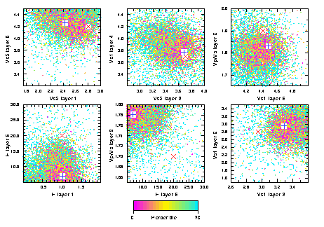

S-plot guide
This program produces X or postscript plots of the points (models) in parameter space generated by a neighbourhood algorithm. It reads the models from the NAD direct access file produced by the program NA-sampler and plots the scatter of points projected on to planes defined by selected pairs of variables.
To compile type
> make all
in splot home directory. Note that splot is compiled automatically when `make all' is typed in the main src directory. The executables are placed in the bin directory.
To execute type
splot-x (or splot-p) (-g)
for X, or Postscript in the data/splot directory.
The -g is optional, and produces a discretized version of the plot, rather than plotting each model as a coloured dot. This is useful if the number of models (dots) is large (e.g. > 15000). The discretization interval is controlled by the dot radius obtained from splot.cmd.
The discretized version is much quicker in X and produces much smaller postscript files. The disadvantage is that one can no longer see the chronological progression of the sampling on the screen, which can give a useful impression of how the sampling varies as a function of iteration.
Note that the X-graphics version may crash if netscape is running because of a conflict in colour tables.
Input files:
-
na.nad - NAD format direct access file containing the
multidimensional points (models) to be plotted. (Must be present.)
The NAD format stands for neighbourhood algorithm direct access file,
and is described
here.
splot.cmd - contains main control parameters for plot. (Must be present.)
(See example file for explanation of entries.)
ranges.in - contains upper and lower limits for each parameter,
and other parameters which control appearance of axes. (Must be present.)
(See example file for explanation of entries.)
pal.in - defines colour of pens in RGB (must be present).
(See example file for explanation of entries.)
model.ref - defines a reference model to be plotted on top of scatter (optional file). A reference model is not plotted if model.ref is not present, or the pen colour for the reference model read in from splot.cmd is < 0.
finetune - contains increments in cm for nudging the axes annotation and labels in a postscript plot. The file is optional and is only read in by postscript version splot-p. (See example file for details.)
-
splot.ps - Postscript file of plot (only if splot-p is used).
splot-x sends plot to screen.
Examples
An example NAD file is provided which has 10020 models in a 24-dimensional space. Example splot.cmd files are provided in directory splot/cmds which produce plots of 1,2,3,4,6,12,20, and 30 pairs of scatter plots in separate panels. To run any one, say the 2-panel plot, then do the following,
cd data/splot
cp cmds/splot.cmd2 splot.cmd
splot-x
This will produce the following plot.

The models are colour coded by the data fit using the colour scheme defined in file pal.in.
A similar 6-panel plot can be obtained with
cp cmds/splot.cmd6 splot.cmd
splot-x
which gives

The input file for the 2-panel plot looks like this: #
# Command file for program splot
#
na.nad :
name of input nad file
2 :
number of plots
13,17 : x,y variables for first
plot
15,10 : x,y variables for next
plot
3 :
pen for true model symbol
4 :
pen for best model symbol
0. 70. 0.0 : min, max, isw [Minimum and
maximum percentiles (isw=0) or misfit (isw=1) for colour map]
21 40 : First and last pen
for colourmap
Title
: Title string goes here
4. 16. 1.0 1.0 : x, y, size of title text for PS, X
(These are multiplication factors of the default size)
1.0 1.0 :
Size of text for PS, X
(These are multiplication factors of the default size)
1.0 : Size of symbols
(x default size)
1.0 : Size of model
dots (x default size)
2 :
Frame type (0=simple frame; 1=frame with max and min only;
2=annotated frame with options read from ranges.in)
The file finetune can be used to adjust the position of the two axes labels and numbers in the postscript plot (See example files for details). This will usually be necessary to produce presentable postscript figures.
References:
-
The Neighbourhood algorithm for searching a multi-dimensional parameter space
for models (points) with `acceptable data fit' is implemented
in the program NA-sampler, and is described in the paper:
Geophysical Inversion with a Neighbourhood Algorithm I -
Searching a parameter space,
Sambridge, M., Geophys. J. Int., 138,
479-494, 1999.
A related paper describes the Neighbourhood re-sampling algorithm (implemented in program NA-Bayes ) for calculating Bayesian integrals from a finite set of samples produced by the NA algorithm or any other search method (e.g. GA or SA etc.).
Geophysical Inversion with a Neighbourhood Algorithm II - Appraising
the ensemble,
Sambridge, M., Geophys. J. Int., 138, 1999.
Postscript files of these papers can be downloaded from the NA homepage.
Related sites:
Enquires to Malcolm Sambridge: malcolm@rses.anu.edu.au